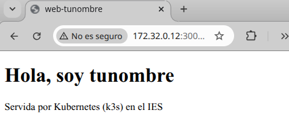
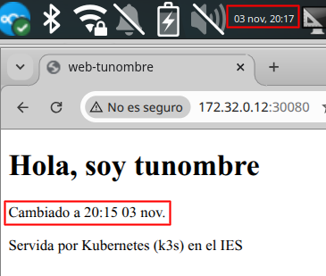
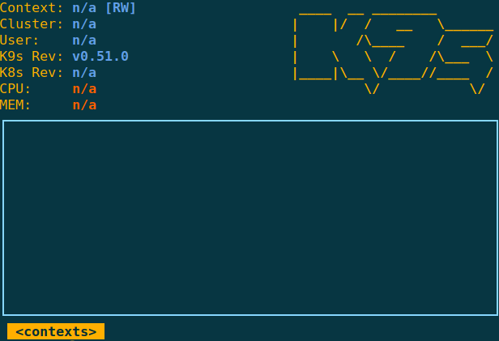
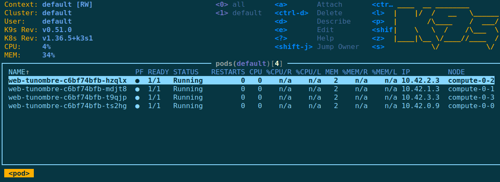
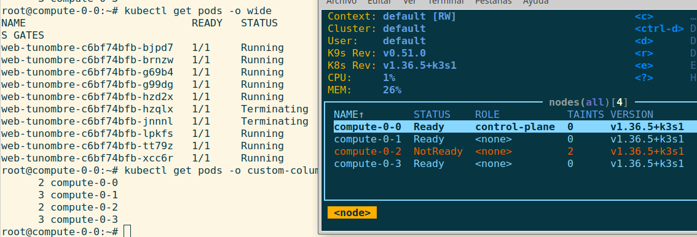
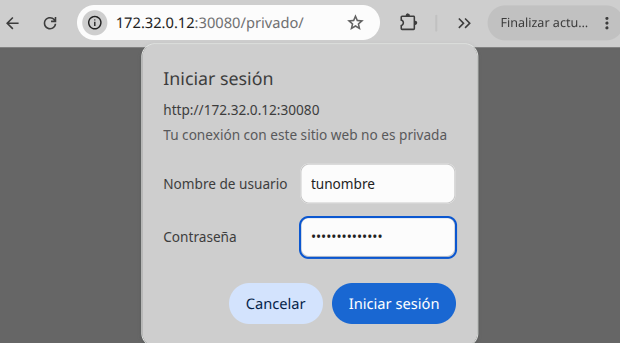
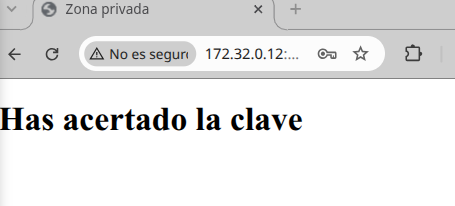

Caso práctico: un clúster Kubernetes con k3s#
Montamos ahora un clúster de verdad con k3s, la distribución ligera de Kubernetes de Rancher: un único binario de unos 70 MB que trae dentro el servidor de la API, el planificador, containerd, flannel y un Ingress (Traefik) ya instalados. Es Kubernetes certificado —los comandos y los ficheros YAML son exactamente los mismos que con la instalación completa de kubeadm— pero cabe en una máquina virtual modesta y se instala con una orden.
Haz de nuevo las cuatro máquinas del Caso práctico: clúster Ubuntu Server con NAT y red interna, con dos cambios:
En la tarjeta NAT de compute-0-0, además del reenvío del puerto 2222 del anfitrión al 22, añade otro del 30080 del anfitrión al 30080 (con la IP del invitado 10.0.2.10). Por ahí veremos la aplicación desde el navegador del anfitrión.
compute-0-0 será el servidor del clúster y compute-0-1, compute-0-2 y compute-0-3 los agentes.
El clúster#
La instalación «oficial» de Kubernetes, con kubeadm, exige además desactivar la swap, cargar el módulo br_netfilter, activar el enrutado IP y configurar containerd a mano. Con k3s no hace falta nada de eso: el enrutado IP ya está puesto desde que compute-0-0 hace de router para la red interna, el módulo br_netfilter lo carga el propio instalador, y ni siquiera hay que quitar la swap, porque su kubelet no la rechaza.
En compute-0-0 instalamos el servidor. El instalador descarga el binario, crea los enlaces a kubectl, crictl y ctr, y deja un servicio de systemd arrancado y habilitado:
root@compute-0-0:~# curl -sfL https://get.k3s.io | sh -
[INFO] Finding release for channel stable
[INFO] Using v1.36.4+k3s1 as release
[INFO] Downloading binary https://github.com/k3s-io/k3s/releases/download/v1.36.4%2Bk3s1/k3s
[INFO] Verifying binary download
[INFO] Installing k3s to /usr/local/bin/k3s
[INFO] Creating /usr/local/bin/kubectl symlink to k3s
[INFO] Creating /usr/local/bin/crictl symlink to k3s
[INFO] Creating /usr/local/bin/ctr symlink to k3s
[INFO] Creating killall script /usr/local/bin/k3s-killall.sh
[INFO] Creating uninstall script /usr/local/bin/k3s-uninstall.sh
[INFO] systemd: Creating service file /etc/systemd/system/k3s.service
[INFO] systemd: Enabling k3s unit
[INFO] systemd: Starting k3s
root@compute-0-0:~# systemctl is-active k3s
active
root@compute-0-0:~# systemctl is-enabled k3s
enabled
Al cabo de medio minuto ya hay un nodo. Y aquí aparece el primer problema, porque compute-0-0 tiene dos tarjetas:
root@compute-0-0:~# kubectl get nodes -o wide
NAME STATUS ROLES AGE VERSION INTERNAL-IP OS-IMAGE
compute-0-0 Ready control-plane 48s v1.36.4+k3s1 10.0.2.10 Ubuntu 26.04.1 LTS
k3s ha elegido la primera tarjeta, la que está en modo NAT, como dirección del nodo: 10.0.2.10. Esa no vale: es una dirección que puede cambiar y que los agentes de la red interna no alcanzan. El clúster tiene que vivir en la red interna, así que desinstalamos y repetimos diciéndole por dónde:
root@compute-0-0:~# /usr/local/bin/k3s-uninstall.sh
root@compute-0-0:~# curl -sfL https://get.k3s.io | \
INSTALL_K3S_EXEC="--node-ip 172.16.0.10 --flannel-iface enp0s8" sh -
root@compute-0-0:~# kubectl get nodes -o wide
NAME STATUS ROLES AGE VERSION INTERNAL-IP OS-IMAGE
compute-0-0 Ready control-plane 26s v1.36.4+k3s1 172.16.0.10 Ubuntu 26.04.1 LTS
--node-ip es la dirección con la que el nodo se anuncia y --flannel-iface la tarjeta por la que viaja la red interna de los contenedores. Comprueba con ip a cuál es el nombre de tu tarjeta interna: aquí es enp0s8.
Antes de tocar los agentes, recupera el masquerade de compute-0-0:
root@compute-0-0:~# systemctl restart nftables
root@compute-0-0:~# nft list table ip nat | grep masquerade
oifname "enp0s3" ip saddr 172.16.0.0/16 masquerade
Al instalar k3s, que programa sus propias reglas, se ha perdido la regla de /etc/nftables.conf que da salida a Internet a la red interna, y sin ella los agentes no pueden descargarse el instalador. Tenlo en cuenta cada vez que toques el cortafuegos del servidor.
Los agentes se unen con la dirección del servidor y un token que k3s ha generado al instalarse:
root@compute-0-0:~# cat /var/lib/rancher/k3s/server/node-token
K106e38f07428bc61c0645f6ba3fe0...::server:6e0f...
Ese token son cien caracteres que no apetece copiar a mano de una máquina a otra, así que lanzamos la instalación de los tres agentes desde compute-0-0 por ssh, como ya hacíamos en la tarea de Ansible:
root@compute-0-0:~# for n in compute-0-1 compute-0-2 compute-0-3; do
ssh -n $n "curl -fL https://get.k3s.io | \
K3S_URL=https://172.16.0.10:6443 \
K3S_TOKEN='$(cat /var/lib/rancher/k3s/server/node-token)' sh -"
done
[INFO] systemd: Enabling k3s-agent unit
[INFO] systemd: Starting k3s-agent
El truco está en las comillas: el $(cat ...) va dentro de comillas dobles, así que lo resuelve compute-0-0 antes de mandar la orden, y al agente le llega el token ya escrito. Las comillas simples de dentro viajan tal cual y protegen el valor en la otra máquina.
Fíjate en que en los agentes el servicio se llama k3s-agent, no k3s. En compute-0-0 no existe, así que sale inactive; lo comprobamos en los agentes desde compute-0-0 por ssh, y en su diario se ve el arranque:
root@compute-0-0:~# systemctl is-active k3s-agent
inactive
root@compute-0-0:~# ssh compute-0-1 systemctl is-active k3s-agent
active
root@compute-0-0:~# ssh compute-0-1 systemctl is-enabled k3s-agent
enabled
root@compute-0-0:~# ssh compute-0-1 journalctl -u k3s-agent | grep -i "Starting k3s agent"
nov 03 18:42:28 compute-0-1 k3s[2441]: time="2026-11-03T18:42:28Z" level=info msg="Starting k3s agent v1.36.5+k3s1 (3dd98cc5)"
En los agentes no hay kubectl ni credenciales: si lo ejecutas ahí da un error de conexión y parece que el clúster está roto cuando no lo está.
Desde el servidor ya tenemos el clúster entero:
root@compute-0-0:~# kubectl get nodes
NAME STATUS ROLES AGE VERSION
compute-0-0 Ready control-plane 2d19h v1.36.4+k3s1
compute-0-1 Ready <none> 2d19h v1.36.4+k3s1
compute-0-2 Ready <none> 2d19h v1.36.4+k3s1
compute-0-3 Ready <none> 2d19h v1.36.4+k3s1
Si kubectl get nodes contesta, están funcionando el servidor de la API, containerd y la red. Que is-enabled diga enabled es lo que garantiza que el clúster vuelva solo después de apagar las máquinas.
Y lo que k3s trae dentro, que debe estar Running o Completed:
root@compute-0-0:~# kubectl get pods -n kube-system
NAME READY STATUS RESTARTS AGE
coredns-... 1/1 Running 0 2d19h
local-path-provisioner-... 1/1 Running 0 2d19h
metrics-server-... 1/1 Running 0 2d19h
helm-install-traefik-crd-... 0/1 Completed 0 2d19h
helm-install-traefik-... 0/1 Completed 1 2d19h
svclb-traefik-...-<uno por nodo> 1/1 Running 0 2d19h
traefik-... 1/1 Running 0 2d19h
Estos son los servicios que en una instalación con kubeadm habría que ir montando a mano: coredns es el DNS interno del clúster, traefik el Ingress con el que publicaremos la aplicación por nombre, local-path-provisioner el almacenamiento local que usaremos al final del tema, metrics-server el que da los datos a kubectl top, y svclb-traefik el repartidor que pone una copia en cada nodo. Los dos helm-install son tareas de un solo uso: instalaron Traefik al arrancar y por eso salen Completed y no Running.
Desplegar y exponer una aplicación#
Hasta ahora, para publicar una web instalábamos un servidor, copiábamos los ficheros y arrancábamos un servicio. En Kubernetes se describe el resultado en un fichero YAML y el clúster se encarga del resto. Creamos web-tunombre.yml con tres objetos:
un ConfigMap con la página,
un Deployment que pide 4 copias de nginx con esa página montada,
y un Service de tipo NodePort que la publica en el puerto 30080 de los cuatro nodos.
apiVersion: v1
kind: ConfigMap
metadata:
name: web-tunombre-html
data:
index.html: |
<!DOCTYPE html>
<html>
<head><title>web-tunombre</title></head>
<body>
<h1>Hola, soy tunombre</h1>
<p>Servida por Kubernetes (k3s) en el IES</p>
</body>
</html>
---
apiVersion: apps/v1
kind: Deployment
metadata:
name: web-tunombre
spec:
replicas: 4
selector:
matchLabels:
app: web-tunombre
template:
metadata:
labels:
app: web-tunombre
spec:
containers:
- name: nginx
image: nginx:alpine
ports:
- containerPort: 80
volumeMounts:
- name: html
mountPath: /usr/share/nginx/html
volumes:
- name: html
configMap:
name: web-tunombre-html
---
apiVersion: v1
kind: Service
metadata:
name: web-tunombre
spec:
type: NodePort
selector:
app: web-tunombre
ports:
- port: 80
targetPort: 80
nodePort: 30080
Las etiquetas son lo que une las tres piezas: el Deployment pone app: web-tunombre a cada copia y el Service reparte entre todo lo que lleve esa etiqueta. Fíjate en que en el fichero no aparece ningún nodo: no decimos en qué máquinas van las copias, eso lo decide el clúster.
root@compute-0-0:~# kubectl apply -f web-tunombre.yml
configmap/web-tunombre-html created
deployment.apps/web-tunombre created
service/web-tunombre created
root@compute-0-0:~# kubectl get pods -o wide
NAME READY STATUS RESTARTS AGE IP NODE
web-tunombre-c6bf74bfb-7d9dj 0/1 ContainerCreating 0 7s <none> compute-0-2
web-tunombre-c6bf74bfb-w45md 0/1 ContainerCreating 0 7s <none> compute-0-0
web-tunombre-c6bf74bfb-zdzcm 0/1 ContainerCreating 0 7s <none> compute-0-1
web-tunombre-c6bf74bfb-q8k4n 0/1 ContainerCreating 0 7s <none> compute-0-3
Al principio salen en ContainerCreating: cada nodo se está descargando la imagen. Espera unos segundos y repite:
root@compute-0-0:~# kubectl get pods -o wide
NAME READY STATUS RESTARTS AGE IP NODE
web-tunombre-c6bf74bfb-7d9dj 1/1 Running 0 25s 10.42.2.3 compute-0-2
web-tunombre-c6bf74bfb-w45md 1/1 Running 0 25s 10.42.0.9 compute-0-0
web-tunombre-c6bf74bfb-zdzcm 1/1 Running 0 25s 10.42.1.3 compute-0-1
web-tunombre-c6bf74bfb-q8k4n 1/1 Running 0 25s 10.42.3.2 compute-0-3
root@compute-0-0:~# kubectl get services
NAME TYPE CLUSTER-IP EXTERNAL-IP PORT(S) AGE
kubernetes ClusterIP 10.43.0.1 <none> 443/TCP 14m
web-tunombre NodePort 10.43.65.96 <none> 80:30080/TCP 26s
El servicio kubernetes es el de la propia API del clúster y está siempre; el nuestro es web-tunombre. El planificador ha repartido una copia en cada máquina sin que se lo pidamos. Cada Pod tiene su propia dirección de la red interna de contenedores (10.42.X.Y), que el clúster crea con flannel por encima de nuestra 172.16.0.0/16.
Con NodePort la aplicación responde en el puerto 30080 de cualquiera de los nodos, aunque ahí no haya ninguna copia:
root@compute-0-2:~# curl -s http://172.16.0.11:30080
<!DOCTYPE html>
<html>
<head><title>web-tunombre</title></head>
<body>
<h1>Hola, soy tunombre</h1>
<p>Servida por Kubernetes (k3s) en el IES</p>
</body>
</html>
Para ver qué está pasando, tres comandos que usarás constantemente:
kubectl get all -o wide # todo de un vistazo
kubectl describe pod web-tunombre-c6bf74bfb-7d9dj # por qué un Pod no arranca
kubectl logs web-tunombre-c6bf74bfb-7d9dj # la salida del contenedor
Publicar con un nombre: el Ingress#
Acceder por «la IP de un nodo y el puerto 30080» no es como se publica un servicio de verdad. Un Ingress publica la aplicación por nombre en el puerto 80, y k3s ya trae instalado el controlador que lo hace, Traefik:
root@compute-0-0:~# kubectl get svc -n kube-system traefik
NAME TYPE CLUSTER-IP EXTERNAL-IP PORT(S)
traefik LoadBalancer 10.43.84.167 172.16.0.10,172.16.0.11,172.16.0.12 80:32524/TCP,443:30869/TCP
ingress-tunombre.yml:
apiVersion: networking.k8s.io/v1
kind: Ingress
metadata:
name: web-tunombre
spec:
rules:
- host: web-tunombre.local
http:
paths:
- path: /
pathType: Prefix
backend:
service:
name: web-tunombre
port:
number: 80
Como web-tunombre.local no existe en ningún DNS, lo añadimos al /etc/hosts de los cuatro nodos:
root@compute-0-0:~# echo "172.16.0.10 web-tunombre.local" >> /etc/hosts
root@compute-0-0:~# kubectl apply -f ingress-tunombre.yml
ingress.networking.k8s.io/web-tunombre created
root@compute-0-0:~# kubectl get ingress
NAME CLASS HOSTS ADDRESS PORTS AGE
web-tunombre traefik web-tunombre.local 172.16.0.10,172.16.0.11,172.16.0.12 80 13s
root@compute-0-0:~# curl -s http://web-tunombre.local | head -4
<!DOCTYPE html>
<html>
<head><title>web-tunombre</title></head>
<body>
Ahora la aplicación se pide por su nombre y en el puerto 80, como cualquier web. Y en la misma dirección caben muchas aplicaciones: el Ingress mira la cabecera Host: y decide a cuál va cada petición.
Hasta aquí hemos entrado siempre desde dentro del clúster. Desde el navegador del anfitrión también se ve, sin entrar en ninguna máquina, gracias al reenvío de puertos de la tarjeta NAT que pusimos al principio (el 30080 del anfitrión al 30080 de compute-0-0):
http://<ip-del-anfitrión>:30080

Eso entra por el NodePort, no por el Ingress: es la misma aplicación, pero pedida por IP y puerto en lugar de por nombre. El nombre web-tunombre.local solo lo entienden los nodos, que son los que lo tienen en su /etc/hosts.
Nota
El Ingress sigue siendo totalmente válido, pero Kubernetes ya no le añade funciones nuevas. Su sucesor es la Gateway API, que separa la entrada al clúster (Gateway) de las reglas de cada aplicación (HTTPRoute). Por eso verás un httproute.yaml en el chart que genera Helm.
Cambiar la página sin entrar en ninguna máquina#
Ya tienes la web delante en el navegador, así que la siguiente pregunta es la de siempre: ¿dónde se toca esto para cambiarlo? En un servidor de toda la vida entrarías por ssh y editarías el index.html. Aquí no, y el propio sistema te lo impide. Los volúmenes de ConfigMap se montan en sólo lectura, y menos mal: estarías cambiando una copia de cuatro, y el cambio se perdería en cuanto ese Pod muriera. La página no vive en ningún contenedor, vive en el ConfigMap, y ahí es donde se toca:
El ConfigMap está dentro de web-tunombre.yml, así que se edita ahí, en el fichero, y se vuelve a aplicar. Añádele a la página una línea con la hora a la que haces el cambio, que es la forma de saber qué versión estás viendo:
<h1>Hola, soy tunombre</h1>
<p>Cambiado a <hora dia y mes></p>
Escribe la hora, el día y el mes de verdad, por ejemplo Cambiado a 13:00 3 sept. Es lo que te va a decir si lo que estás viendo en el navegador es tu cambio o todavía el de antes.
root@compute-0-0:~# kubectl apply -f web-tunombre.yml
configmap/web-tunombre-html configured
Y ahora recarga el navegador. No habrá cambiado todavía, y eso no es un fallo. El kubelet de cada nodo va refrescando cada poco los ficheros que vienen de un ConfigMap, así que el cambio tarda hasta un minuto en aparecer. Comparando la hora que escribiste con la hora en la que sale, se mide exactamente lo que ha tardado. Si recargas a los dos segundos y ves lo de antes, es que has ido más rápido que el clúster.

Importante
Llama al profesor y enséñaselo funcionando. Sube un pantallazo1 del navegador en el que se vea la página con tu cambio y, a la vez, el día y la hora del equipo, como en la imagen.
Lo importante es lo que ha pasado mientras tanto: han cambiado las cuatro copias a la vez, sin reiniciar nada, sin entrar en ninguna máquina y sin que importe en qué nodo esté cada una. Has cambiado un objeto, no unos servidores.
Escalabilidad y autorreparación#
Todo lo que viene ahora se ve mucho mejor en vivo, así que abre una segunda terminal contra compute-0-0 y déjala con k9s, una consola que enseña el clúster y lo va refrescando solo:
root@compute-0-0:~# curl -sL https://github.com/derailed/k9s/releases/latest/download/k9s_linux_amd64.deb -o /tmp/k9s.deb
root@compute-0-0:~# apt install -y /tmp/k9s.deb
root@compute-0-0:~# k9s
Arranca, pero no ve nada: el contexto, el clúster y el usuario salen como n/a.

kubectl encuentra solo las credenciales del clúster porque es el propio binario de k3s, pero k9s no: busca ~/.kube/config, que en k3s no existe, porque las credenciales están en /etc/rancher/k3s/k3s.yaml. Se lo decimos con la variable KUBECONFIG, y lo dejamos puesto en el ~/.bashrc para no tener que repetirlo:
root@compute-0-0:~# echo 'export KUBECONFIG=/etc/rancher/k3s/k3s.yaml' >> ~/.bashrc
root@compute-0-0:~# bash
root@compute-0-0:~# echo $KUBECONFIG
/etc/rancher/k3s/k3s.yaml
root@compute-0-0:~# k9s
Ahora sí se conecta al clúster default y enseña los cuatro Pods con el nodo en el que está cada uno:

Con eso, la máquina queda como cualquier otro cliente de Kubernetes, y la variable vale igual para helm o para cualquier otra herramienta que necesite las credenciales.
Dentro de k9s, con unas pocas teclas tienes bastante:
0— muestra todos los namespaces.:podsy:nodes— cambian de vista.l— saca los registros del Pod señalado.d— su descripción.Ctrl-D— lo borra, muy a mano para la prueba de autorreparación de aquí abajo.:q— sale.
Con esa terminal a la vista, en la primera pedir más copias es cambiar un número:
root@compute-0-0:~# kubectl scale deployment web-tunombre --replicas=8
deployment.apps/web-tunombre scaled
root@compute-0-0:~# kubectl get pods -o custom-columns=NODO:.spec.nodeName --no-headers | sort | uniq -c
2 compute-0-0
2 compute-0-1
2 compute-0-2
2 compute-0-3
Y si se pierde una copia, el clúster la repone sin que nadie haga nada:
root@compute-0-0:~# kubectl delete pod web-tunombre-c6bf74bfb-5v2ld
pod "web-tunombre-c6bf74bfb-5v2ld" deleted from default namespace
root@compute-0-0:~# kubectl get pods --no-headers | wc -l
8
El clúster compara sin parar lo que hay con lo que pediste, y arregla la diferencia.
Qué pasa cuando se cae una máquina#
Esto es lo que de verdad distingue a Kubernetes de todo lo anterior, y conviene verlo con reloj. Apaga compute-0-2 entera desde VirtualBox, con las ocho copias repartidas 2/2/2/2, y ve mirando:
root@compute-0-0:~# kubectl get nodes
root@compute-0-0:~# kubectl get pods -o wide
Pausamos compute-0-2. En menos de un minuto el clúster se da cuenta de que ese nodo ha dejado de dar señales, pero los Pods siguen exactamente donde estaban:
root@compute-0-0:~# kubectl get nodes
NAME STATUS ROLES AGE VERSION
compute-0-0 Ready control-plane 4d22h v1.36.4+k3s1
compute-0-1 Ready <none> 4d21h v1.36.4+k3s1
compute-0-2 NotReady <none> 4d21h v1.36.4+k3s1
compute-0-3 Ready <none> 4d21h v1.36.4+k3s1
root@compute-0-0:~# kubectl get pods -o custom-columns=NODO:.spec.nodeName --no-headers | sort | uniq -c
2 compute-0-0
2 compute-0-1
2 compute-0-2
2 compute-0-3
No es un error: el clúster ha dejado de recibir noticias de ese nodo, pero no sabe si la máquina está apagada o es la red la que falla, y arrancar copias nuevas de algo que quizá sigue vivo puede ser peor. Así que espera cinco minutos antes de tocar nada.
A los seis minutos toma la decisión, y a partir de aquí hay que mirar la salida entera, no un recuento:

Importante
Llama al profesor y enséñaselo. Sube un pantallazo2 como este, con la salida de kubectl get pods -o wide, el recuento por nodos y k9s con compute-0-2 en NotReady. Fíjate en que en el recuento compute-0-2 sigue apareciendo con 2: son los dos Pods en Terminating.
Aparecen diez Pods donde pediste ocho: ha recreado las dos copias perdidas en las máquinas que quedan —vuelven a estar las ocho pedidas— y ha marcado las viejas como Terminating. Se quedarán así mientras el nodo no vuelva, porque nadie puede confirmar que se hayan parado.
Nota
Ese Terminating no sale en el recuento de antes, y no es un fallo del comando: no es un estado que exista en el objeto, lo calcula kubectl al ver que el Pod tiene puesta la fecha de borrado. Por dentro sigue diciendo Running. Por eso, en esta prueba, la salida completa de kubectl get pods -o wide enseña más que cualquier recuento.
Al volver a encender compute-0-2, el nodo pasa a Ready en menos de un minuto, los Terminating desaparecen... y las copias no vuelven:
root@compute-0-0:~# kubectl get nodes
NAME STATUS ROLES AGE VERSION
compute-0-0 Ready control-plane 4d22h v1.36.4+k3s1
compute-0-1 Ready <none> 4d21h v1.36.4+k3s1
compute-0-2 Ready <none> 4d21h v1.36.4+k3s1
compute-0-3 Ready <none> 4d21h v1.36.4+k3s1
root@compute-0-0:~# kubectl get pods -o custom-columns=NODO:.spec.nodeName --no-headers | sort | uniq -c
2 compute-0-0
3 compute-0-1
3 compute-0-3
Siguen siendo ocho copias, pero repartidas 2 / 3 / 3: las dos que se perdieron con el nodo renacieron en compute-0-1 y compute-0-3, y ahí se han quedado. Fíjate en que compute-0-2 ni siquiera aparece en la lista: está Ready, dentro del clúster y listo para recibir trabajo, pero sin una sola copia.
Kubernetes garantiza que haya ocho copias, no que estén repartidas a partes iguales: mover algo que ya funciona no aporta nada y sí arriesga. Nada va a reequilibrarlo solo; el reparto se recupera según vayan muriendo y naciendo Pods.
Y eso se puede provocar. Mata una copia de uno de los nodos que tienen tres y mira dónde nace la siguiente:
root@compute-0-0:~# kubectl delete pod <una copia de compute-0-1>
El planificador elige por hueco, así que la nueva se va a compute-0-2, que está a cero. Repitiendo con una de compute-0-3 vuelves a tener las ocho repartidas. Y si quieres hacerlo de una vez, kubectl rollout restart deployment web-tunombre recrea las ocho de pocas en pocas y las vuelve a colocar, que es lo que harías en un sistema de verdad porque no corta el servicio.
Actualizar sin cortar el servicio#
Cambiar la versión de la aplicación es cambiar la imagen del Deployment, y Kubernetes va sustituyendo las copias de pocas en pocas. La pregunta es si durante ese cambio se pierde alguna petición, y para poder contestarla hay que medir antes, con la aplicación quieta: trescientas peticiones seguidas, contando por código de respuesta.
root@compute-0-0:~# for i in $(seq 1 300); do
curl -s -o /dev/null -w "%{http_code}\n" --max-time 5 http://web-tunombre.local
sleep 0.2
done | sort | uniq -c
300 200
Sin tocar nada contestan las trescientas, como tenía que ser. Ese es el punto de partida: ahora actualizamos la imagen y, mientras se actualiza, repetimos exactamente la misma medición desde otra terminal para comparar. rollout status cuenta el proceso:
root@compute-0-0:~# kubectl set image deployment/web-tunombre nginx=nginx:1.29-alpine
deployment.apps/web-tunombre image updated
root@compute-0-0:~# kubectl rollout status deployment/web-tunombre
Waiting for deployment "web-tunombre" rollout to finish: 7 out of 8 new replicas have been updated...
Waiting for deployment "web-tunombre" rollout to finish: 2 old replicas are pending termination...
Waiting for deployment "web-tunombre" rollout to finish: 7 of 8 updated replicas are available...
deployment "web-tunombre" successfully rolled out
Y si la versión nueva no sirve, se vuelve atrás con un comando:
root@compute-0-0:~# kubectl rollout history deployment web-tunombre
REVISION CHANGE-CAUSE
1 <none>
3 <none>
4 <none>
root@compute-0-0:~# kubectl rollout undo deployment/web-tunombre
deployment.apps/web-tunombre rolled back
Y aquí está la diferencia. El mismo bucle de antes, lanzado en otra terminal mientras el cambio está en marcha, ya no da lo mismo: con el Deployment tal como lo hemos escrito, el resultado no es perfecto:
2 000
295 200
3 502
Los 502 son peticiones que Traefik mandó a una copia que ya se estaba apagando, y los 000 conexiones cortadas a medias.
Importante
Llama al profesor y enséñale las peticiones perdidas. Sube un pantallazo3 en el que se vea el resultado del bucle durante el cambio, con los 502 y los 000.
Kubernetes no sabe cuándo un contenedor está listo ni cuándo ha terminado de atender lo que tenía entre manos, y hay que decírselo con tres cosas:
una readinessProbe: hasta que la página no conteste, esa copia no recibe tráfico;
maxUnavailable: 0: no quites una copia vieja hasta tener una nueva lista;y un preStop, una pausa antes de apagar la copia vieja, para que le dé tiempo a salir de la lista de destinos.
Las tres van en el Deployment de web-tunombre.yml, que ya tienes escrito: no es un objeto nuevo. Este es el Deployment entero tal como queda; lo resaltado es lo que hay que añadir o cambiar. El ConfigMap y el Service del mismo fichero no se tocan:
# web-tunombre.yml, el Deployment completo
apiVersion: apps/v1
kind: Deployment
metadata:
name: web-tunombre
spec:
replicas: 8
strategy:
rollingUpdate:
maxSurge: 25%
maxUnavailable: 0
selector:
matchLabels:
app: web-tunombre
template:
metadata:
labels:
app: web-tunombre
spec:
containers:
- name: nginx
image: nginx:alpine
ports:
- containerPort: 80
readinessProbe:
httpGet:
path: /
port: 80
periodSeconds: 2
lifecycle:
preStop:
exec:
command: ["sleep", "5"]
volumeMounts:
- name: html
mountPath: /usr/share/nginx/html
volumes:
- name: html
configMap:
name: web-tunombre-html
Y aprovecha para poner las ocho réplicas en el fichero: el kubectl scale de antes cambió el clúster pero no el YAML, así que si lo aplicas tal como está te bajaría otra vez al número viejo. Después, kubectl apply -f web-tunombre.yml, y repitiendo la misma prueba, ahora sí:
300 200
Merece la pena verlo por pasos, porque explica para qué sirve cada ajuste:
Deployment |
300 peticiones durante el cambio |
|---|---|
como está arriba |
295 |
con readinessProbe y maxUnavailable: 0 |
297 |
y además con preStop |
300 |
Actualizar sin cortar el servicio no sale gratis por usar Kubernetes: sale de decirle al clúster cómo sabe él que una copia ya está lista para recibir peticiones, y cuánto tiene que esperar antes de apagar una que todavía está atendiendo.
Una imagen propia: Dockerfile, ConfigMap y Secret#
Hasta aquí hemos usado la imagen oficial de nginx con la página metida en un ConfigMap. Ahora construimos nuestra propia imagen, que lee de variables de entorno el título de la página, y un usuario y una clave con los que protege una zona privada: si aciertas la contraseña ves una página que de otra forma no se ve.
Eso obliga a decidir dónde vive cada dato, que es de lo que va el apartado:
lo que no cambia nunca, dentro de la imagen: la plantilla de la página,
lo que cambia según dónde despliegues y no es secreto, en un ConfigMap: el título y el nombre de usuario,
y la contraseña, en un Secret.
La misma imagen sirve entonces para clase, para pruebas y para producción; lo único que cambia es el ConfigMap.
Kubernetes no construye imágenes, así que instalamos Docker en compute-0-0 (convive con k3s sin tocarle las reglas de red):
root@compute-0-0:~# apt install -y docker.io
La imagen oficial de nginx ejecuta al arrancar todo lo que encuentre en /docker-entrypoint.d/. Ese es el sitio donde sustituir las variables dentro del HTML, con envsubst:
Son cuatro ficheros y un directorio, todo dentro de imagen/, y cada uno tiene que quedar con exactamente lo que se ve aquí: ni una línea más.
imagen/
├── Dockerfile
├── index.html.template
├── default.conf
├── 20-titulo.sh
└── privado/
└── index.html
imagen/index.html.template, la página pública, con el enlace a la zona privada:
<!DOCTYPE html>
<html>
<head><title>${TITULO}</title></head>
<body>
<h1>${TITULO}</h1>
<p>Imagen propia construida con Dockerfile</p>
<p><a href="/privado/">Zona privada</a></p>
</body>
</html>
imagen/privado/index.html, lo que se ve al acertar la clave:
<!DOCTYPE html>
<html>
<head><title>Zona privada</title></head>
<body>
<h1>Has acertado la clave</h1>
</body>
</html>
imagen/default.conf, la configuración de nginx: la raíz es pública y /privado/ pide usuario y contraseña:
server {
listen 80;
root /usr/share/nginx/html;
index index.html;
location /privado/ {
auth_basic "Zona privada";
auth_basic_user_file /etc/nginx/.htpasswd;
}
}
imagen/20-titulo.sh, que es donde las variables se convierten en algo que sirve: una escribe el título en la página y la otra crea el fichero de contraseñas de nginx:
#!/bin/sh
# la imagen nginx ejecuta al arrancar todo lo que encuentre en /docker-entrypoint.d/
envsubst "\$TITULO" < /plantilla/index.html.template > /usr/share/nginx/html/index.html
htpasswd -bc /etc/nginx/.htpasswd "$USUARIO" "$CLAVE"
imagen/Dockerfile:
FROM nginx:alpine
# envsubst viene en gettext; htpasswd, en apache2-utils
RUN apk add --no-cache gettext apache2-utils
ENV TITULO="sin titulo" USUARIO="nadie" CLAVE="sin clave"
COPY index.html.template /plantilla/index.html.template
COPY privado /usr/share/nginx/html/privado
COPY default.conf /etc/nginx/conf.d/default.conf
COPY 20-titulo.sh /docker-entrypoint.d/20-titulo.sh
RUN chmod +x /docker-entrypoint.d/20-titulo.sh
Los ENV del Dockerfile son solo valores por defecto, para que la imagen arranque aunque no le pases nada; los de verdad llegan del ConfigMap y del Secret.
Nota
La raíz / tiene que seguir siendo pública, porque es donde pega la readinessProbe. Si proteges el sitio entero, todas las sondas reciben un 401, ningún Pod llega a READY y el despliegue no termina nunca.
Y al sustituir default.conf verás en los logs 10-listen-on-ipv6-by-default.sh: info: /etc/nginx/conf.d/default.conf differs from the packaged version. No es un error: ese script de la imagen oficial solo toca el fichero si es el que venía de fábrica.
Construimos la imagen:
root@compute-0-0:~# docker build -t web-tunombre:1.0 imagen/
sha256:28ce5e9688896cf74c49b57685c71bd8af308f5dfa0d9608a4b5f49fed40cbe2
La imagen está ahora en el Docker de compute-0-0, pero k3s no usa Docker, usa containerd, y además cada nodo tiene su propio almacén de imágenes. Si una copia cae en compute-0-1 y allí no está la imagen, el Pod se queda en ErrImagePull. Hay que llevarla a los tres agentes:
root@compute-0-0:~# docker save web-tunombre:1.0 -o web-tunombre-1.0.tar
root@compute-0-0:~# ls -lh web-tunombre-1.0.tar
31M web-tunombre-1.0.tar
root@compute-0-0:~# k3s ctr images import web-tunombre-1.0.tar
unpacking docker.io/library/web-tunombre:1.0 ...
root@compute-0-0:~# for n in 1 2 3; do
scp web-tunombre-1.0.tar 172.16.0.1$n:/root/
ssh 172.16.0.1$n "k3s ctr images import /root/web-tunombre-1.0.tar"
done
root@compute-0-0:~# for n in 0 1 2 3; do
echo -n "compute-0-$n: "; ssh 172.16.0.1$n "k3s ctr images ls | grep -c web-tunombre"
done
compute-0-0: 1
compute-0-1: 1
compute-0-2: 1
compute-0-3: 1
En la vida real esto se resuelve con un registro de imágenes (Docker Hub o uno propio): se sube una vez y cada nodo se la descarga. Copiar el tar a mano solo se aguanta con cuatro máquinas.
El título y el usuario no son secretos y van en un ConfigMap; la clave sí, y va en un Secret. Los dos son objetos nuevos, así que van en un fichero nuevo, config-tunombre.yml:
apiVersion: v1
kind: ConfigMap
metadata:
name: web-tunombre-config
data:
titulo: "Hola, soy tunombre"
usuario: "tunombre"
---
apiVersion: v1
kind: Secret
metadata:
name: web-tunombre-secret
type: Opaque
stringData:
clave: "MiClaveSecreta"
Tenerlos creados no hace nada por sí solo: hay que inyectarlos como variables de entorno en el contenedor, y eso se toca donde vive el contenedor, en el Deployment de web-tunombre.yml.
Y de paso desaparece el ConfigMap web-tunombre-html con la página y el volumen que lo montaba en /usr/share/nginx/html. Ya no hacen falta, porque ahora la página la genera la propia imagen al arrancar, y además estorban: un volumen de ConfigMap se monta en sólo lectura, así que el envsubst del arranque no podría escribir ahí el index.html. Si te lo dejas puesto, el Pod arranca pero la página sigue siendo la vieja, y no hay ningún error que te lo diga.
Entre lo que se añade y lo que se va son demasiados cambios para un recorte, así que aquí está web-tunombre.yml entero tal como tiene que quedar: de los tres objetos del principio ya solo quedan dos, el Deployment y el Service. Resaltado, lo que es nuevo en este apartado:
# web-tunombre.yml, el fichero completo
apiVersion: apps/v1
kind: Deployment
metadata:
name: web-tunombre
spec:
replicas: 8
strategy:
rollingUpdate:
maxSurge: 25%
maxUnavailable: 0
selector:
matchLabels:
app: web-tunombre
template:
metadata:
labels:
app: web-tunombre
spec:
containers:
- name: nginx
image: web-tunombre:1.0
imagePullPolicy: IfNotPresent
ports:
- containerPort: 80
env:
- name: TITULO
valueFrom:
configMapKeyRef:
name: web-tunombre-config
key: titulo
- name: USUARIO
valueFrom:
configMapKeyRef:
name: web-tunombre-config
key: usuario
- name: CLAVE
valueFrom:
secretKeyRef:
name: web-tunombre-secret
key: clave
readinessProbe:
httpGet:
path: /
port: 80
periodSeconds: 2
lifecycle:
preStop:
exec:
command: ["sleep", "5"]
---
apiVersion: v1
kind: Service
metadata:
name: web-tunombre
spec:
type: NodePort
selector:
app: web-tunombre
ports:
- port: 80
targetPort: 80
nodePort: 30080
La image deja de ser nginx:alpine y pasa a ser la nuestra. Y imagePullPolicy: IfNotPresent es importante: sin él, el clúster intentaría descargar de Docker Hub una imagen que solo existe en nuestros nodos. El readinessProbe, el preStop y las ocho réplicas vienen del apartado anterior, y el Service no se toca desde que lo escribimos.
Y hay una diferencia con la página del ConfigMap de antes: aquellos ficheros se refrescaban solos porque iban montados como un volumen, pero una variable de entorno se lee al arrancar el contenedor y ya no cambia mientras vive. Si ahora cambias el título en el ConfigMap, la web seguirá igual hasta que los Pods se recreen.
Y se aplican los dos ficheros, el nuevo y el de siempre:
root@compute-0-0:~# kubectl apply -f config-tunombre.yml
configmap/web-tunombre-config created
secret/web-tunombre-secret created
root@compute-0-0:~# kubectl apply -f web-tunombre.yml
deployment.apps/web-tunombre configured
service/web-tunombre unchanged
Del segundo fichero solo cambia el Deployment; el Service sigue igual y kubectl lo dice con unchanged. Y el ConfigMap viejo, el de la página, no se borra solo por haberlo quitado del fichero: apply crea y modifica, pero no elimina lo que ya no aparece. Se queda ahí hasta que tú lo tires:
root@compute-0-0:~# kubectl delete configmap web-tunombre-html
configmap "web-tunombre-html" deleted
Si te responde Error from server (NotFound) es que ya no estaba, y no pasa nada: delete protesta cuando le pides borrar algo que no existe. Con --ignore-not-found se calla.
El apply solo dice que el cambio está guardado, no que los Pods nuevos hayan arrancado. Y aquí hay una trampa heredada del apartado anterior: con maxUnavailable: 0 el clúster no mata a los Pods viejos mientras los nuevos no estén listos, así que si la imagen nueva falla la web sigue respondiendo con la página de antes y no hay ningún error a la vista. Por eso, después de este apply y de todos los que vengan:
root@compute-0-0:~# kubectl rollout status deployment/web-tunombre
deployment "web-tunombre" successfully rolled out
root@compute-0-0:~# kubectl get pods -o wide
Si el rollout status se queda parado, los Pods nuevos no arrancan y la columna STATUS dice por dónde va el problema:
STATUS |
Qué ha pasado |
|---|---|
|
En ese nodo no está la imagen. Mira la columna |
|
El contenedor se muere nada más arrancar. El motivo está en los logs, pero del contenedor anterior. |
|
Le pides al contenedor una variable que sale de una clave que no existe en el ConfigMap o en el Secret. El mensaje lo dice con nombre y apellidos: |
|
El contenedor vive pero no contesta a la readinessProbe. |
Lo de CrashLoopBackOff merece su propio comando, porque es el más traicionero: kubectl logs a secas enseña el contenedor recién nacido, que todavía no ha dicho nada. El error está en el que acaba de morir, y ese se ve con --previous:
root@compute-0-0:~# kubectl describe pod web-tunombre-5c95dc87d6-5w94p | grep -A4 "Last State"
Last State: Terminated
Reason: Error
Exit Code: 127
root@compute-0-0:~# kubectl logs web-tunombre-5c95dc87d6-5w94p --previous
/docker-entrypoint.sh: Launching /docker-entrypoint.d/20-titulo.sh
/docker-entrypoint.d/20-titulo.sh: line 5: root@compute-0-0:~#: not found
/docker-entrypoint.d/20-titulo.sh: line 6: FROM: not found
/docker-entrypoint.d/20-titulo.sh: line 9: ENV: not found
Ese Exit Code: 127 es orden no encontrada, y los logs dicen exactamente lo que ha pasado: al copiar de esta página, dentro de 20-titulo.sh se ha colado el Dockerfile. nginx ejecuta al arrancar todo lo que hay en /docker-entrypoint.d/, el script devuelve 127 y el contenedor se muere ahí mismo. Comprueba con cat imagen/20-titulo.sh que dentro están esas tres líneas y nada más.
Advertencia
Cuando arregles algo y vuelvas a construir, no reutilices el tag 1.0. Los nodos ya tienen una imagen con ese nombre y los Pods que estén Running se quedan con la vieja: el docker build y el import no cambian nada y la web sigue igual, sin ningún error que lo explique.
Construye con un tag nuevo y cambia la image: del Deployment, que además así se ve el rollout:
root@compute-0-0:~# docker build -t web-tunombre:1.1 imagen/
root@compute-0-0:~# docker save web-tunombre:1.1 -o web-tunombre-1.1.tar
root@compute-0-0:~# k3s ctr images import web-tunombre-1.1.tar
root@compute-0-0:~# for n in 1 2 3; do
scp web-tunombre-1.1.tar 172.16.0.1$n:/root/
ssh 172.16.0.1$n "k3s ctr images import /root/web-tunombre-1.1.tar"
done
Si te empeñas en repetir tag, la imagen hay que reimportarla igualmente en los cuatro nodos y además forzar el relevo de los Pods con kubectl rollout restart deployment/web-tunombre.
root@compute-0-0:~# curl -s http://web-tunombre.local
<!DOCTYPE html>
<html>
<head><title>Hola, soy tunombre</title></head>
<body>
<h1>Hola, soy tunombre</h1>
<p>Imagen propia construida con Dockerfile</p>
<p><a href="/privado/">Zona privada</a></p>
</body>
</html>
El título ha salido del ConfigMap. Y la zona privada, del Secret: sin contraseña no se entra, con una equivocada tampoco, y con la buena sí.
root@compute-0-0:~# curl -s -o /dev/null -w "%{http_code}\n" http://web-tunombre.local/privado/
401
root@compute-0-0:~# curl -s -o /dev/null -w "%{http_code}\n" -u tunombre:loquesea http://web-tunombre.local/privado/
401
root@compute-0-0:~# curl -s -u tunombre:MiClaveSecreta http://web-tunombre.local/privado/
<!DOCTYPE html>
<html>
<head><title>Zona privada</title></head>
<body>
<h1>Has acertado la clave</h1>
</body>
</html>
Lo que hace que el navegador saque la ventanita de usuario y contraseña es una cabecera que manda nginx con el 401:
root@compute-0-0:~# curl -sI http://web-tunombre.local/privado/ | grep -i "HTTP/\|WWW-Auth"
HTTP/1.1 401 Unauthorized
WWW-Authenticate: Basic realm="Zona privada"
Así que desde el navegador del anfitrión, en http://<ip-del-anfitrión>:30080/privado/, sale el cuadro de diálogo pidiendo el usuario y la contraseña que están en el ConfigMap y en el Secret.
La diferencia entre los dos se ve en describe, que enseña de dónde sale cada variable pero no el valor del Secret:
root@compute-0-0:~# kubectl describe pod web-tunombre-6d9474f456-9qxwz | grep -A4 Environment
Environment:
TITULO: <set to the key 'titulo' of config map 'web-tunombre-config'> Optional: false
USUARIO: <set to the key 'usuario' of config map 'web-tunombre-config'> Optional: false
CLAVE: <set to the key 'clave' in secret 'web-tunombre-secret'> Optional: false
Advertencia
Un Secret no está cifrado, solo codificado en base64, y dentro del contenedor la clave está a la vista. Sirve para que no aparezca en los listados ni en el fichero YAML del repositorio, no para guardar algo de verdad importante:
root@compute-0-0:~# kubectl get secret web-tunombre-secret -o jsonpath='{.data.clave}'
TWlDbGF2ZVNlY3JldGE=
root@compute-0-0:~# echo TWlDbGF2ZVNlY3JldGE= | base64 -d
MiClaveSecreta
root@compute-0-0:~# kubectl exec web-tunombre-6d9474f456-9qxwz -- printenv TITULO USUARIO CLAVE
Hola, soy tunombre
tunombre
MiClaveSecreta
Y ahora se puede probar de verdad lo de las variables de entorno. Cambia la contraseña a tuapellido, y esta vez pásala tú a base64. Saca el valor con echo -n; el -n es importante, porque sin él se cuela el salto de línea dentro de la clave:
root@compute-0-0:~# echo -n tuapellido | base64
dHVhcGVsbGlkbw==
En config-tunombre.yml cambia en el Secret stringData por data y pon ese valor:
data:
clave: "dHVhcGVsbGlkbw=="
Y aplícalo:
root@compute-0-0:~# kubectl apply -f config-tunombre.yml
secret/web-tunombre-secret configured
root@compute-0-0:~# curl -s -o /dev/null -w "%{http_code}\n" -u tunombre:MiClaveSecreta http://web-tunombre.local/privado/
200
Sigue entrando con la contraseña vieja, aunque el Secret ya tenga la nueva, porque los Pods que están vivos leyeron la suya al arrancar. Hasta que no se recrean no se enteran:
root@compute-0-0:~# kubectl rollout restart deployment/web-tunombre
root@compute-0-0:~# kubectl rollout status deployment/web-tunombre
root@compute-0-0:~# curl -s -o /dev/null -w "%{http_code}\n" -u tunombre:MiClaveSecreta http://web-tunombre.local/privado/
401
root@compute-0-0:~# curl -s -o /dev/null -w "%{http_code}\n" -u tunombre:tuapellido http://web-tunombre.local/privado/
200
root@compute-0-0:~# curl -s -o /dev/null -w "%{http_code}\n" -u tunombre:otracosa http://web-tunombre.local/privado/
401
No hace falta reconstruir la imagen ni tocar web-tunombre.yml: eso es justo lo que se gana separando la configuración de la imagen.
Importante
Llama al profesor y enséñale el echo -n ... | base64 con el que has sacado la clave y los curl: 200 con tuapellido y 401 con otra contraseña.
Y desde el navegador del anfitrión, en http://<ip-del-anfitrión>:30080/privado/, entra con el usuario tunombre y la contraseña tuapellido. Sube un pantallazo4 de la ventana de inicio de sesión y otro de la página que sale después, como estos:


Almacenamiento persistente#
Un Pod es desechable: cuando muere se lleva consigo todo lo que hubiera escrito. Para que los datos sobrevivan hay que sacarlos fuera, y lo que ya sabemos montar es un NFS (ver NFS). En compute-0-0:
root@compute-0-0:~# apt install -y nfs-kernel-server
root@compute-0-0:~# for n in 1 2 3; do ssh -n 172.16.0.1$n "apt install -y nfs-common"; done
root@compute-0-0:~# mkdir -p /srv/tunombre && chmod 777 /srv/tunombre
root@compute-0-0:~# echo "/srv/tunombre 172.16.0.0/16(rw,sync,no_subtree_check,no_root_squash)" >> /etc/exports
root@compute-0-0:~# exportfs -ra && exportfs -v
/srv/tunombre 172.16.0.0/16(sync,wdelay,hide,no_subtree_check,sec=sys,rw,secure,no_root_squash,no_all_squash)
En Kubernetes el almacenamiento se describe en dos piezas: un PersistentVolume (el disco que hay) y un PersistentVolumeClaim (lo que la aplicación pide). nfs-tunombre.yml:
apiVersion: v1
kind: PersistentVolume
metadata:
name: pv-tunombre
spec:
capacity:
storage: 1Gi
accessModes:
- ReadWriteMany
persistentVolumeReclaimPolicy: Retain
storageClassName: nfs-tunombre
nfs:
server: 172.16.0.10
path: /srv/tunombre
---
apiVersion: v1
kind: PersistentVolumeClaim
metadata:
name: pvc-tunombre
spec:
accessModes:
- ReadWriteMany
storageClassName: nfs-tunombre
resources:
requests:
storage: 1Gi
ReadWriteMany es lo que permite que varias copias a la vez escriban en el mismo sitio, y es justo lo que un NFS sabe hacer.
root@compute-0-0:~# kubectl apply -f nfs-tunombre.yml
persistentvolume/pv-tunombre created
persistentvolumeclaim/pvc-tunombre created
root@compute-0-0:~# kubectl get pv,pvc
NAME CAPACITY ACCESS MODES RECLAIM POLICY STATUS CLAIM
persistentvolume/pv-tunombre 1Gi RWX Retain Bound default/pvc-tunombre
NAME STATUS VOLUME CAPACITY ACCESS MODES
persistentvolumeclaim/pvc-tunombre Bound pv-tunombre 1Gi RWX
Bound quiere decir que la petición ha encontrado su volumen, y ahora se monta en el Deployment de web-tunombre.yml. Como ese fichero se ha ido construyendo a trozos en tres apartados distintos, aquí va entero, para que lo compares con el tuyo. Lo resaltado es lo importante de este apartado: el volumeMounts dentro del contenedor y el volumes al mismo nivel que containers.
apiVersion: apps/v1
kind: Deployment
metadata:
name: web-tunombre
spec:
replicas: 8
strategy:
rollingUpdate:
maxSurge: 25%
maxUnavailable: 0
selector:
matchLabels:
app: web-tunombre
template:
metadata:
labels:
app: web-tunombre
spec:
containers:
- name: nginx
image: web-tunombre:1.0
imagePullPolicy: IfNotPresent
ports:
- containerPort: 80
env:
- name: TITULO
valueFrom:
configMapKeyRef:
name: web-tunombre-config
key: titulo
- name: USUARIO
valueFrom:
configMapKeyRef:
name: web-tunombre-config
key: usuario
- name: CLAVE
valueFrom:
secretKeyRef:
name: web-tunombre-secret
key: clave
readinessProbe:
httpGet:
path: /
port: 80
periodSeconds: 2
lifecycle:
preStop:
exec:
command: ["sleep", "5"]
volumeMounts:
- name: datos
mountPath: /datos
volumes:
- name: datos
persistentVolumeClaim:
claimName: pvc-tunombre
Y kubectl apply -f web-tunombre.yml para que se lleve a los Pods. Kubernetes los recrea él solo al ver el Deployment cambiado, pero conviene comprobar que han nacido todos con el volumen antes de seguir:
root@compute-0-0:~# kubectl apply -f web-tunombre.yml
root@compute-0-0:~# kubectl rollout status deployment/web-tunombre
root@compute-0-0:~# kubectl get pods -o custom-columns=POD:.metadata.name,NODO:.spec.nodeName,VOLUMENES:.spec.containers[0].volumeMounts[*].name
Los Pods buenos llevan datos en la última columna; los que salgan vacíos son de la versión anterior y tienen que desaparecer solos. Si se quedan, kubectl rollout restart deployment/web-tunombre los renueva todos de pocas en pocas, sin dejar el servicio sin copias.
Y la prueba de que el dato sobrevive al Pod: escribimos desde una copia, la borramos y leemos desde la que nace en su lugar, que además puede caer en otra máquina:
root@compute-0-0:~# kubectl exec web-tunombre-7f7bdd879f-6dxcz -- \
sh -c 'echo "escrito por $(hostname) el $(date)" > /datos/prueba.txt'
root@compute-0-0:~# cat /srv/tunombre/prueba.txt
escrito por web-tunombre-7f7bdd879f-6dxcz el Mon Sep 14 18:05:26 UTC 2026
root@compute-0-0:~# kubectl delete pod web-tunombre-7f7bdd879f-6dxcz
root@compute-0-0:~# kubectl exec web-tunombre-7f7bdd879f-fmvhq -- cat /datos/prueba.txt
escrito por web-tunombre-7f7bdd879f-6dxcz el Mon Sep 14 18:05:26 UTC 2026
El fichero lo escribió un Pod que ya no existe y lo lee otro que ha nacido después. Los datos viven en el NFS, no en el contenedor.
Importante
Llama al profesor y enséñaselo antes de subirlo. Sube un pantallazo5 en el que se vean el final de tu web-tunombre.yml (el volumeMounts y el volumes), el kubectl exec con el que uno de tus Pods escribe en /datos/prueba.txt y, desde compute-0-0, el cat /srv/tunombre/prueba.txt con el nombre de ese Pod y la fecha.
Nota
k3s trae además una clase de almacenamiento por defecto, local-path, que no necesita NFS: crea el directorio en el disco del nodo donde arranca el Pod. Repite la prueba con ella (quita storageClassName del PVC) y verás que funciona mientras el Pod renazca en la misma máquina; si el planificador lo manda a otra, el fichero no está. Esa es la diferencia entre almacenamiento local y almacenamiento de red, y es la razón de montar el NFS.
Mantenimiento del clúster#
Añadir un nodo al clúster que ya está funcionando es repetir en la máquina nueva el mismo comando de los agentes. La máquina nueva sería una quinta, compute-0-4, otro clon enlazado de MV Ubuntu Server con 4 GB de memoria y la tarjeta en "Red interna" : 172.16.0.14/16. Para llamarla por su nombre, como a las demás, la añadimos al /etc/hosts de compute-0-0 (si no la tienes ya). Como con los otros agentes, lo lanzamos desde compute-0-0 por ssh para que el token viaje ya escrito. Compáralo con lo que costaba añadir un nodo al clúster de Slurm de la tarea 04:
root@compute-0-0:~# echo "172.16.0.14 compute-0-4" >> /etc/hosts
root@compute-0-0:~# ssh -n compute-0-4 "curl -fL https://get.k3s.io | \
K3S_URL=https://172.16.0.10:6443 \
K3S_TOKEN='$(cat /var/lib/rancher/k3s/server/node-token)' sh -"
root@compute-0-0:~# kubectl get nodes
NAME STATUS ROLES AGE VERSION
compute-0-0 Ready control-plane 2d4h v1.36.4+k3s1
compute-0-1 Ready <none> 2d4h v1.36.4+k3s1
compute-0-2 Ready <none> 2d4h v1.36.4+k3s1
compute-0-3 Ready <none> 2d4h v1.36.4+k3s1
compute-0-4 Ready <none> 40s v1.36.4+k3s1
El nodo ya está en el clúster, pero si miras dónde están los Pods verás que en compute-0-4 no hay ninguno de web-tunombre. El planificador solo decide dónde va un Pod cuando se crea, y los que ya estaban funcionando se quedan en sus nodos: Kubernetes no los mueve para repartir la carga.
Para que la aplicación use el nodo nuevo hay que recrear los Pods, pero antes hay que preparar el nodo con lo que ya sabemos que necesita: la imagen propia, que cada nodo guarda en su containerd, y el cliente de NFS, sin el que los Pods se quedarían en ContainerCreating:
root@compute-0-0:~# scp web-tunombre-1.0.tar compute-0-4:/root/
root@compute-0-0:~# ssh compute-0-4 "k3s ctr images import /root/web-tunombre-1.0.tar"
root@compute-0-0:~# ssh compute-0-4 "k3s ctr images ls | grep web-tunombre"
root@compute-0-0:~# ssh compute-0-4 "apt install -y nfs-common"
Ahora sí, rollout restart crea Pods nuevos uno a uno y va borrando los viejos, sin cortar el servicio, y como son nuevos el planificador ya cuenta con compute-0-4:
root@compute-0-0:~# kubectl rollout restart deployment/web-tunombre
deployment.apps/web-tunombre restarted
root@compute-0-0:~# kubectl rollout status deployment/web-tunombre
deployment "web-tunombre" successfully rolled out
root@compute-0-0:~# kubectl get pods -o wide
Las réplicas quedan repartidas entre los cinco nodos. Por defecto el planificador tiende a repartirlas, pero no lo garantiza: si hay que asegurarlo, el Deployment admite topologySpreadConstraints, que impiden que un nodo tenga más réplicas que otro.
Sacar un nodo para mantenimiento, sin que se caiga nada: drain mueve sus Pods al resto y cordon impide que le manden más trabajo.
root@compute-0-0:~# kubectl drain compute-0-2 --ignore-daemonsets --delete-emptydir-data
root@compute-0-0:~# kubectl uncordon compute-0-2 # al volver
Ver el clúster por dentro cuando algo no va:
journalctl -u k3s -f # en el servidor
journalctl -u k3s-agent -f # en los agentes
kubectl get events --sort-by=.lastTimestamp | tail -20
kubectl get pods -A # incluido lo que k3s trae en kube-system
Empezar de cero, que en clase hace falta más de una vez:
root@compute-0-0:~# /usr/local/bin/k3s-uninstall.sh # en el servidor
root@compute-0-1:~# /usr/local/bin/k3s-agent-uninstall.sh # en los agentes
Y para apagar las máquinas, nada especial: k3s arranca solo al encender, porque es un servicio de systemd habilitado. Al volver, los Pods se recrean y el clúster se reconstruye solo; dale un par de minutos antes de dar nada por roto.